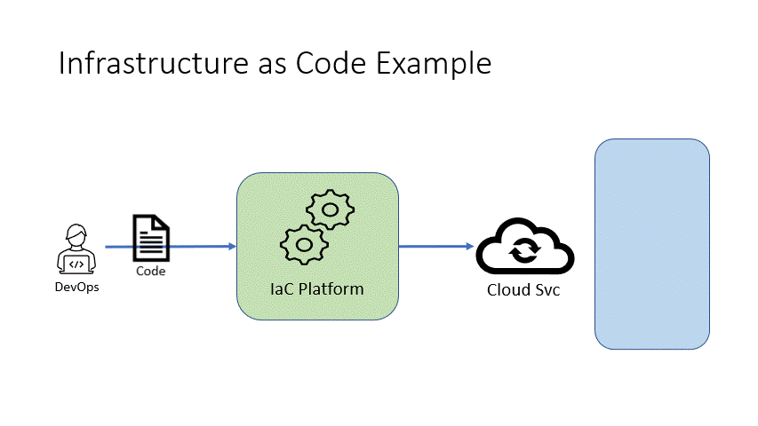
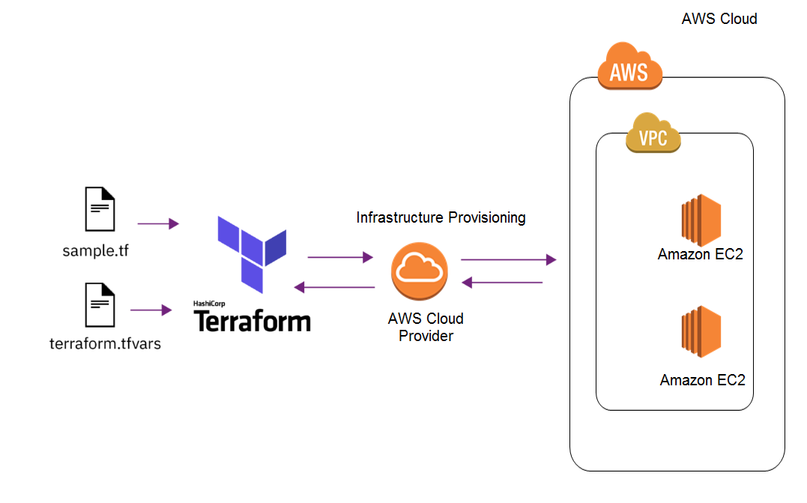

DOCUMENTACION

PROYECTO IAC: AWS Pages v1
Este proyecto fue implementado como objetivo personal para medir mis capacidades de desarrollo e implementación de distintas herramientas y servicios.
En la creacion de este proyecto uso la infraestructura de AWS (Amazon Web Services) y la herramienta Terraform para la configuración de los servicios usados en la infraestructura todo esto mediante código o IAC (infrastructure As Code).
En este proyecto creo 2 servidores que alojan esta página web mediante contenedores usando Docker, la imagen usada para el contenedor usa una imagen base de Apache HTTP llamada Httpd con modificaciones para al momento de inicializar el contenedor arroje esta web.
Dentro del Contenedor de Docker esta la página web diseñada con lenguajes como CSS3, JAVASCRIPT y el lenguaje de marcado HTML.
La elaboración fue realizada en servicios como AWS VPC (Virtual Private Cloud) para la red virtual en AWS usada para los servidores y servicios, AWS EC2 para la creacion de servidores o instancias en AWS y AWS ELB (Elastic Load Balancing) para la distribución de tráfico entrante entre servidores.

PROYECTO IAC: AWS Pages v2
Este proyecto fue implementado apartir de PROYECTO IAC: AWS PAGES v1 con el principio de simplificar el codigo y hacerlo mas modular a la hora de realizar cambios en caso usar nuevamente esta configuracion.
En la creacion de este proyecto uso los servicios de EC2, Elastic Load Balancing y VPC de AWS en conjunto de la herramienta Terraform para la configuración de los servicios usados en la infraestructura todo esto mediante código o IAC (infrastructure As Code).
En este proyecto al igual que el original creo 2 servidores que alojan una página web mediante contenedores usando Docker. Su elaboración fue realizada en servicios como AWS VPC (Virtual Private Cloud) para la red virtual privada, AWS EC2 (Elastic Compute Cloud) para la creacion de las instancias en AWS y AWS ELB (Elastic Load Balancing) para la distribución de tráfico entrante entre servidores.
PROYECTO WEBSITE: Web Portfolio
Es una página el cual le he dedicado tiempo donde al día de hoy tiene una apariencia simple y elegante para las personas que accedan para ver la información.
Esta web tomo un tiempo aproximado de 8 meses después de su creacion de constantes actualizaciones y desarrollo para lograr tener la apariencia que tiene hoy en día, esta desarrollada con lenguajes como HTML, CSS y JavaScript.
En el repositorio de Github está la version 1.0 a la disponibilidad para poderse usar totalmente libre.
PROYECTO DOCKER: Containers
Es un proyecto de CONTENEDORES DOCKER con servicios del Entorno DevOps y SRE, este proyecto tiene como principal tarea simplificar la instalación de cada herramienta para la ejecución y uso mediante Docker, Kubernetes u otro servicio que sirva para la administración contenedores.
Este proyecto tiene como función además de facilitar la ejecución de los servicios y herramientas, agregar la automatización de cada herramienta solo usando un simple comando para ejecutarlas, esto se lleva acabo por 'Makefile' un fichero con el lenguaje Make con el cual puedes dar órdenes para la ejecución, con un simple comando.
Al igual que la mayoría de mis proyectos es algo personal que me di la tarea de hacer para mi desarrollo y aprendizaje en entornos de pruebas, sobre distintas formas de lanzar herramientas para la monitorización de servicios.
Este proyecto se encuentra en repositorio de Github pulsa Aquí para ver.